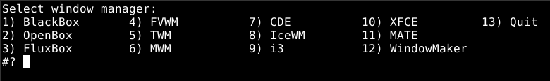
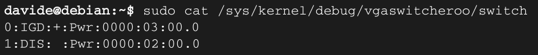
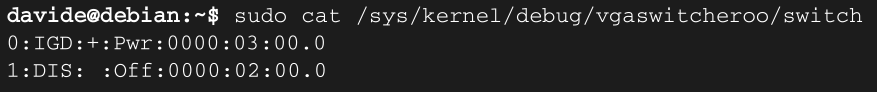
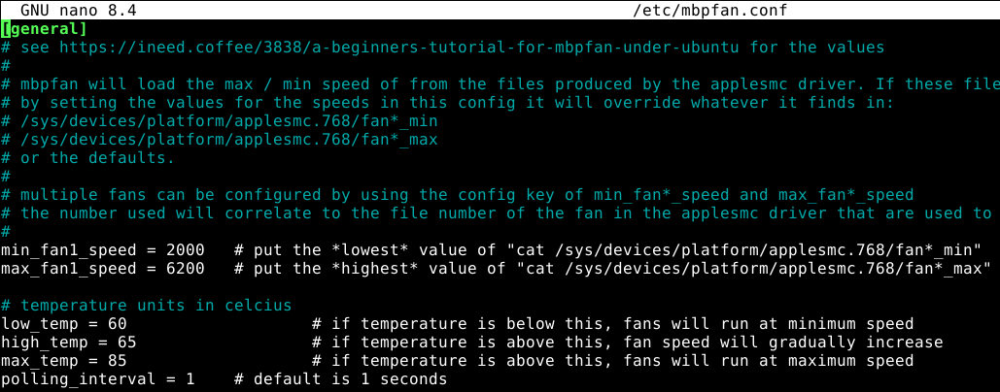

I'v bought a "MacBook Pro 5.1 15 inches" in early 2009. I've used it for several years, till when it started to be a bit laggish, so I've put it back in its box on a shelf and moved to a Window laptop (me bad ...).
Frustrated by the bad road taken by Windows 11 I decided it was time to go back to Linux, that I've used in the late '90 when I had my degree studies. What could be better than a MacBook Pro to install Linux on it ? Nothing! :) So, I take it back on the desk, and did some refurbish:
I decided not to upgrade the RAM, I decided 4GB would be more than enough for me. So, after 17 years my MacBook Pro is still alive and perfectly running. I'm proud of it.
For the motherboard removal the and thermal paste replacement I've followed with good results the following resources:
It was my first experience is such a complex refurbish activity, it tooks me about 2 hours for the complete procedure.
After the thermal paste replacement, the MacBook Pro runs at about 45'C on CPU during standard activity (about 70'C if watching video on YouTube)
Due to the hardware specs of the MacBook Pro, a "minimal" Linux distribution has to be chosen. Some I've tried and have worked are: Sparky Linux, MX Linux, antiX, BunsenLab (which is still present in dual boot actually). There are many others that would work great as well. Then final choice was a basic "plain" installation of Debain 13. Debian, because I'm used to it, I know already how to deal with it. A "plain" installation, and not a specific one or a derivated, because I wanted to "build" and custom a bit according to my preferences.
I still prefer to login in text terminal and only later, if needed, to move to a graphical interface. Moreover I prefer to choice which desktop environment or window manager to use every time. Sometimes I prefer a more comfortable graphical environment, other a more minimalist and essential with no distractions.
To do so, I've installed Debian 13 without selecting any desktop environment and without installing X.org, this to ensure to login in text mode. Then I've installed X.org manually and all the window manager and desktop environment I would like to use: fvwm2, BlackBox, IceWM, WindowMaker, XFCE4 and many others.
To ensure that linux always start in text mode I've run the following command:
sudo systemctl set-default multi-user.target
which creates a symbolic link for /etc/systemd/system/default.target to multi-user.target instead to graphical.target
I like to choose every time the graphical environment to work with. This is one of the several interesting and nice things of linux, not to be stuck on a single specific graphical interface. Anyway I don't like to pass through the display manager, which is itself a graphical environment. I prefer straight call to X server from the terminal.
To do so, I've a simple and raw bash script that shows all the desk environment and window managers options and, upon user selection, update the .xinitrc file and start the X server.

I've configured different .xinitrc file for each DE or WM. Of course some settings are commons among different graphical interfaces. Here below the script that I called just "x":
#!/bin/bash
clear
echo "Select window manager:"
OPTIONS="BlackBox OpenBox FluxBox FVWM TWM MWM CDE IceWM i3 XFCE MATE WindowMaker Quit"
select opt in $OPTIONS; do
if [ "$opt" = "BlackBox" ]; then
XINIT_FILE=.xinitrc.bb
break
elif [ "$opt" = "FluxBox" ]; then
XINIT_FILE=.xinitrc.fluxbox
break
elif [ "$opt" = "OpenBox" ]; then
XINIT_FILE=.xinitrc.openbox
break
elif [ "$opt" = "FVWM" ]; then
XINIT_FILE=.xinitrc.fvwm
break
elif [ "$opt" = "TWM" ]; then
XINIT_FILE=.xinitrc.twm
break
elif [ "$opt" = "MWM" ]; then
XINIT_FILE=.xinitrc.mwm
break
elif [ "$opt" = "CDE" ]; then
XINIT_FILE=.xinitrc.cde
break
elif [ "$opt" = "IceWM" ]; then
XINIT_FILE=.xinitrc.icewm
break
elif [ "$opt" = "i3" ]; then
XINIT_FILE=.xinitrc.i3
break
elif [ "$opt" = "XFCE" ]; then
XINIT_FILE=.xinitrc.xfce
break
elif [ "$opt" = "MATE" ]; then
XINIT_FILE=.xinitrc.mate
break
elif [ "$opt" = "WindowMaker" ]; then
XINIT_FILE=.xinitrc.wmaker
break
elif [ "$opt" = "Quit" ]; then
exit
fi
done
echo "Selected"
cp $HOME/$XINIT_FILE $HOME/.xinitrc
cat $HOME/.xinitrc
startx
The MacBook Pro 5.1, as other from the same era, is equipped with two graphic cards, in particular:
In Mac OS the choice between the two graphic cards is made within the "power management" section. To swap from one to the other graphic card, the MacBook Pro must reboot. The 9400M is of course less powerfull then the 9600M GT, but consumes less power and heat up much less the PC. For standard activities like web surfing, video watching, etc. the 9400M is more than enough.
As soon as linux is installed, at least that's what happened with Debian 13, both graphics cards were powered, while of course only one connected to the display. The result was that both GPU cards were running and processing the data. This is of course an unwanted situation.
To check what's the status of the GPUs let's see inside the file "switch" as per the command below:

The IGD is the "integrated" card, the 9400N. The DIS is the "discrete" card, the 9600M GT. Acoording to the file content, both are powered since "PWR" appears beside both of them. The "active" one, the one connected to the display, is the one with the "+" sign, so the IGD integrated 9400M card.
Fortunately the actual linux kernel is able to manage the presence of more than one GPU via VGA Switcheroo. To have it working, the kernel must be compiled including this option, as the actual Debian 13 kernel I'm using, and Nouveau drivers must be in use. It won't work with NVIDIA drivers, as far as I've understood.
According to the reference document, to switch OFF the not active card, the OFF signal has to be send. This can be done by appending the OFF command to the file switch:
echo OFF | sudo tee /sys/kernel/debug/vgaswitcheroo/switch
Checking again the GPUs status, now the not active DIS 9600M GT card is no more powered. This solution is not permament and has to be redone at every restart of the PC

In order to have the service running at boot, a service file has to be created and placed, for example, in /etc/systemd/system directory.
[Unit]
Description=Turn off discrete GPU
After=multi-user.target single-user.target
[Service]
Type=oneshot
ExecStart=/bin/sh -c 'echo OFF > /sys/kernel/debug/vgaswitcheroo/switch'
RemainAfterExit=yes
[Install]
WantedBy=multi-user.target single-user.target
I basically send the OFF command to the switch file at startup.
Different and alternative service files could be setup in order, for example, to run the discrete GPU instead of the integrated one.
This MBP model, dispete it's Unibody aluminum case, historycally suffers from high temperature generated by the GPUs. It can heat up very quickly even with moderate tasks as watching video.
The basic fans management out-of-the-box provided by the basic linux installation may not be very efficient. The mbpfan deamon improve the fans management, enabling also the customization of the speeds and temperatures ranges.
The deamon is also available as package from standard stable Debian 13 repository, so it could be installed with a standard
sudo apt install mbpfan
The configuration file that can be used to tweak the reference values for temperatures and fan is /etc/mbpfan.conf
By editing this file, with super-user rights, will change the fans behaviour accordingly.

In order to have the deamon starting since the boot, the mdpfan.service file is installed, or it should be installed manually in case, in the /lib/systemd/system folder.
The file contest is the following:
[Unit]
Description=A fan manager daemon for MacBook Pro
After=sysinit.target
[Service]
Type=simple
ExecStart=/usr/sbin/mbpfan -f
ExecReload=/usr/bin/kill -HUP $MAINPID
PIDFile=/run/mbpfan.pid
Restart=always
RestartSec=1
[Install]
WantedBy=sysinit.target
Still under construction ...
Whatever is reported in this webpage is shared under "The Unlicense" license
Last update: April 11th, 2026